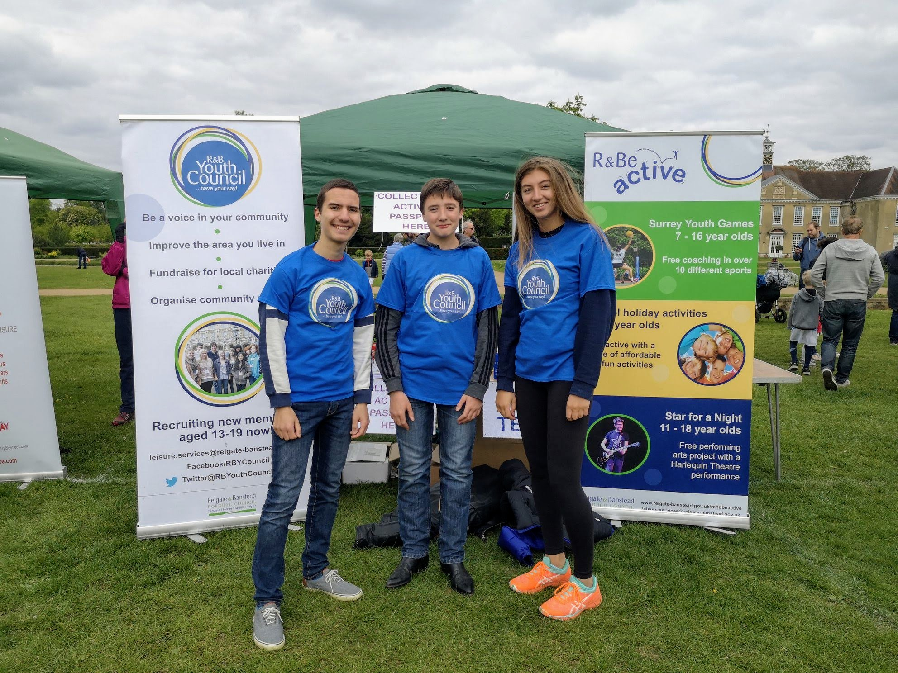
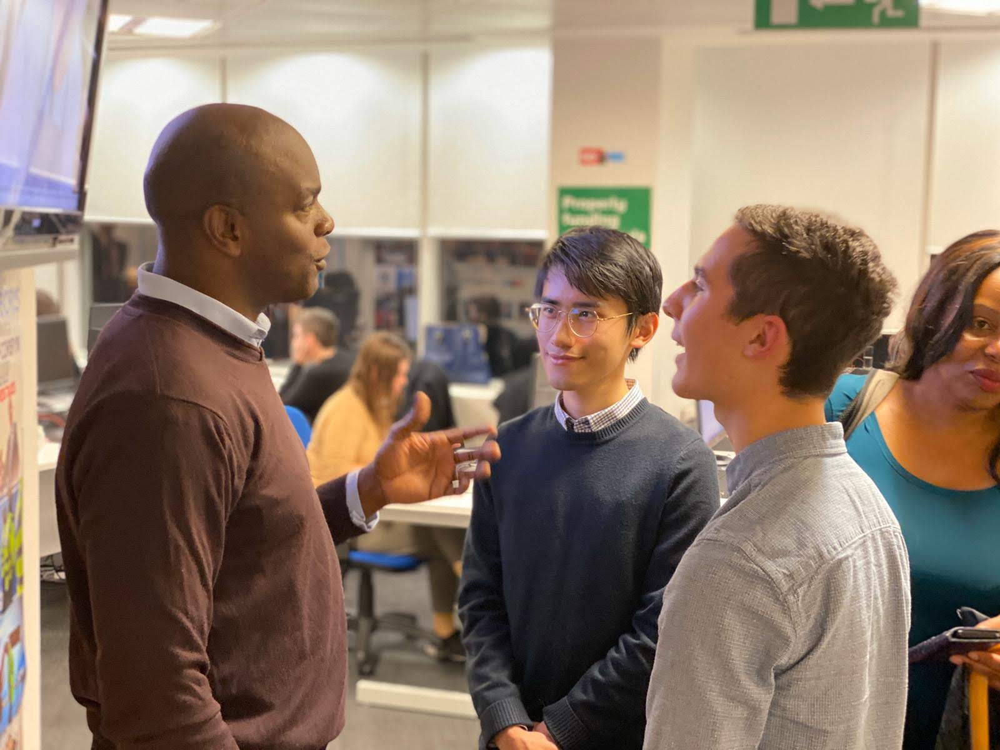
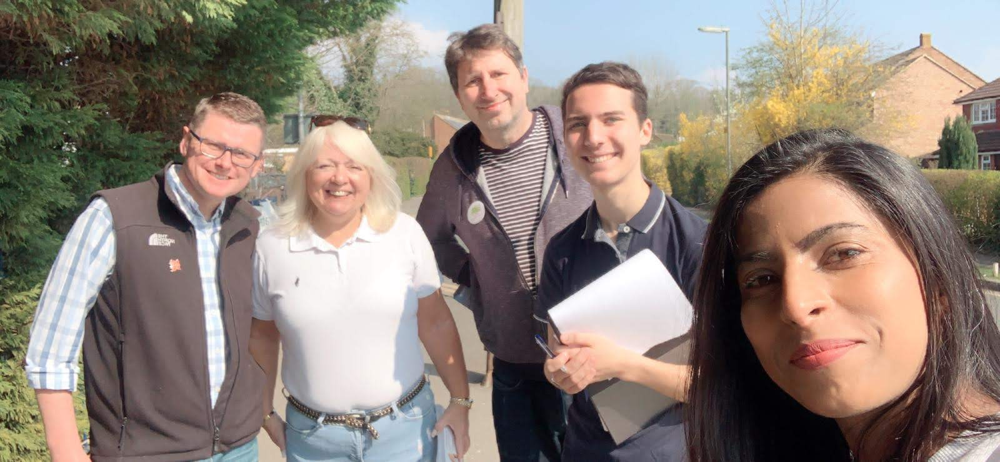
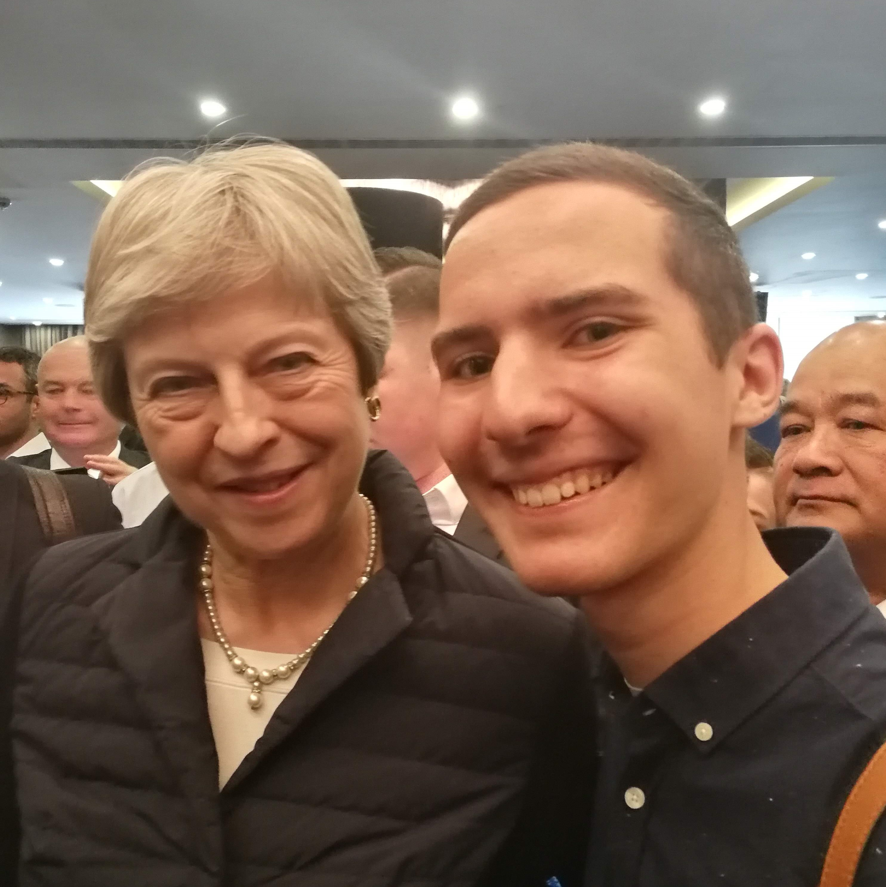
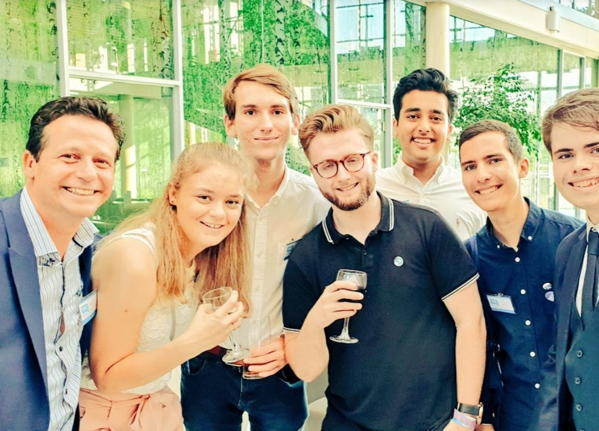
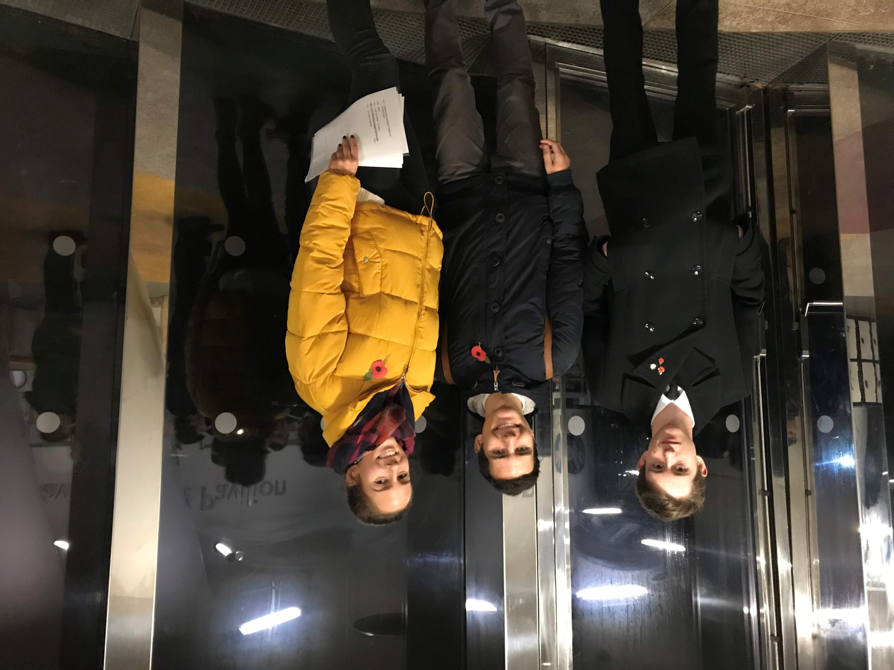

MY PLAN FOR REDHILL WEST AND WRAY COMMON
I will continue to build upon and strengthen relationships with our partners such as the Police and Crime Commissioner, the R&B Joint-Enforcement Team, and local schools to tackle problems within the community and deliver better services for residents.
I will use technology to give residents a voice, creating an online portal where any resident of Redhill West and Wray Common can submit suggestions, complaints, or feedback to myself as Councillor. I will also set up monthly surgeries for residents to chat about any local issues or comments.
I will give residents a strong voice at the heart of our Conservative Council, but as a young person under the age of 25, I will also be able to provide fresh ideas and a different perspective to improve our Council services.
I will continue to be active in my work for the local community, but will be able to do so even more effectively from inside the Council. For instance, I will build on the work I did as Vice-Chair of the Reigate and Banstead Youth Council by using my status as Councillor to promote the important work that the R&B Youth Council do in supporting local charities and organisations and to organise more events for Young People in Redhill.

IDEAS, PROJECTS, and PREVIOUS EXPERIENCE
I will create an online portal to facilitate communication between residents and their Councillor.
I will use my blog and website, adamlehodey.com, to highlight the work that the council has been doing so that residents are aware and can give suggestions and feedback, something that will result in more democratic services.
As part of the Reigate and Banstead Youth Council, I have worked with many local charities and organisations to support our local community. This includes Surrey Drug and Alcohol Care, where we, as the Youth Council, fundraised and organised events to raise awareness for the important work of Surrey Drug and Alcohol Care. I also played an integral part in leading and organising our ‘Big Youth Debate’ in 2018 and 2017, where we encouraged debate on key issues to get Young People interested in Politics and local government. As Councillor, I would build on this by running events and continuing to speak to other Young People about the vital work that the Council does, as well as the importance of Politics as a subject.
I have worked for Crispin Blunt MP, and therefore I, as Councillor, would strengthen the ties between the Council and our MP to ensure we deliver even better outcomes for residents.
In the Summer of 2019, I interned at the Institute of Economic Affairs where I was exposed to many ideas related to political theory and economics. I also love reading about government, economics, and urban design and so will use some of the ideas I have gained to improve outcomes for residents. I am constantly exploring new ideas through books, lectures, and talking with residents.
As part of my Gold DofE, I volunteered at Redhill Library, which gave me a further insight into the work that local Government does in supporting vulnerable individuals. To build on this, I will work with local associations, schools, and charities to solve problems and assist residents when they are in need of help.
I will build on my relationship with the Reigate Youth Council, which I have been a member of since 2015, to get young people more engaged and support local charities and organisations.

WHY I AM THE RIGHT PERSON TO REPRESENT REDHILL WEST AND WRAY COMMON
I am energetic, I have a positive mind-set, and I am eager to make improvements to our local area and deliver better results for residents. My energy and enthusiasm are what will enable me to deliver my projects to high standard, and I will also bring a new younger perspective to the Council. Having always lived in Redhill, I know the area and residents well, and have undertaken a lot of community work in the area through my involvement in the Youth Council.
I have been very active in the area, and I was out every week campaigning, canvassing and listening to residents’ concerns and suggestions for the area. Being on a gap-year, I will have even more time to focus on improving local services for residents of Redhill and other areas within the Borough. I have also led several campaigns within the local area, such as the Campaign to maintain a Post Office in Reigate High Street.
I know and have worked extensively with our other brilliant Redhill West and Wray Common Councillors, including Rich, Natalie, and our current RDW Councillor, Kanika. Our strong relationship is a vital asset – it will enable us to work more effectively as a team and focus on delivering better outcomes for residents. I look forward to making a positive difference in the area!

ABOUT ME
Currently undertaking a gap year, I will be studying Economics and Politics at Durham University. I wish to become a Councillor to make a positive difference in this area that I know and love, and to gain a further insight into the role and responsibilities of local government. Policy areas I am particularly interested in include housing policy, transport, and urban design. My other hobbies include literature, economics, programming, writing, and cycling. To learn more, check out my LinkedIn or ‘About Me’ section.
GALLERY

Campaigning to maintain a Post Office on the High Street.

Photograph with Theresa May, Prime Minister - April 2019.

Photograph of the 2019 Young Conservatives Conference.

Poetry reading at 100-year war memorial event in 2018 - attended by over 1000 people.